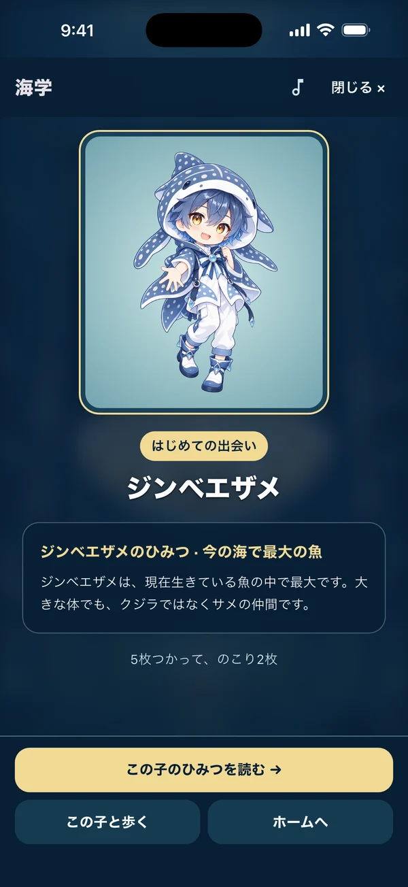
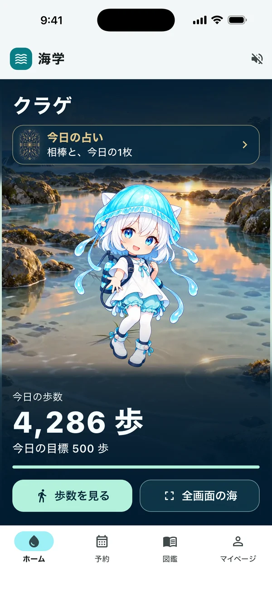
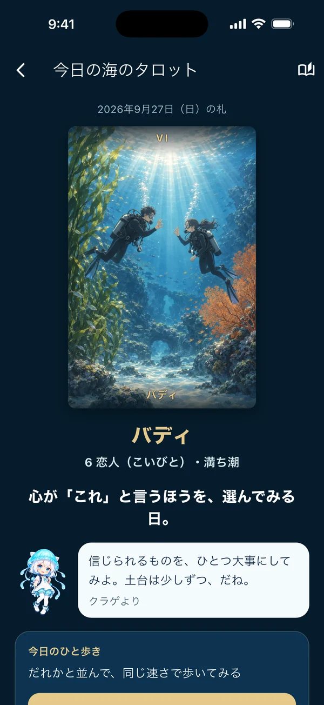
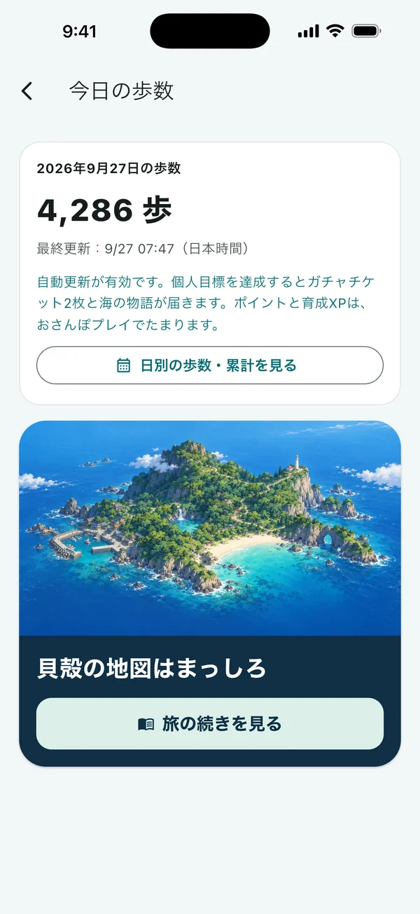
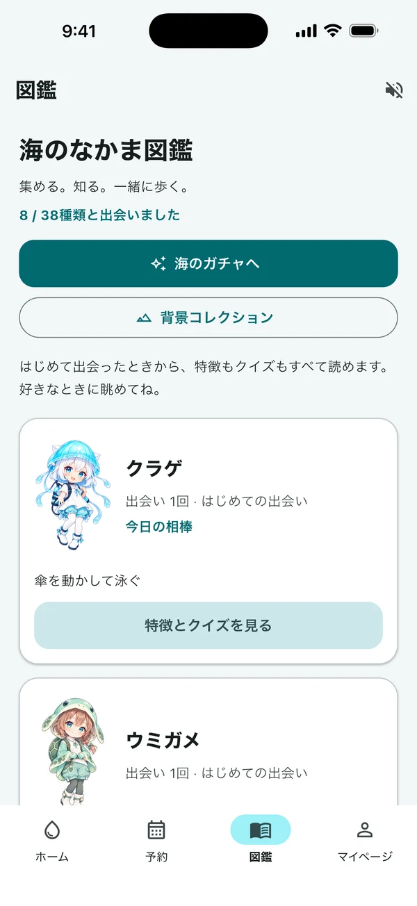
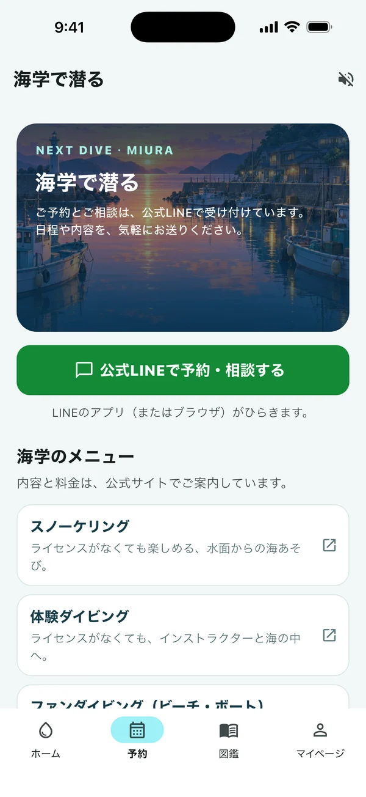

海のガチャ次の相棒は、
次の相棒は、
だれだろう。
海のなかまとの出会いをコレクション。お気に入りの子を、今日の相棒にできます。

三浦 海の学校
公式アプリ「海学」
A LITTLE SEA, EVERY DAY.
いつもの道を、海の相棒と。
今日の気分に、海からの一枚を。
次に潜る日までの楽しみが、手のひらにできました。
App Storeで公開中 · 2026年9月30日リリース


アプリ画面（シミュレーターで撮影）
FROM THE SEA TO YOUR EVERYDAY
長くダイビングを楽しむために、日々の健康も大切に。
「今日は少し歩いてみようかな」——そんなきっかけを、
海のなかまたちと一緒につくるアプリです。
01 WALK WITH YOUR BUDDY
歩数計 × 海の相棒
通勤の道、買い物の帰り、休日の散歩。iPhoneで今日の歩数を見ながら、海の相棒との毎日を楽しめます。相棒を選んで、おさんぽプレイで育てる楽しみも。
歩数の目標は、自分のペースで。目標を達成すると、ガチャチケットや海の物語が届きます。歩く日にも、休む日にも、アプリの中には海が待っています。
海の物語は全8話。
次の景色を楽しみに、今日の一歩を。
歩数計は日常の歩数を楽しむための機能です。健康状態やダイビングへの参加可否を判定するものではありません。

02 A CARD FROM THE SEA
毎日の海タロット
海をテーマにした22枚のタロット。アプリを開いて、今日の一枚と相棒からのメッセージを楽しめます。
バディ、水面の光、まだ知らない海。海の景色を眺めながら、自分の気分に少し目を向ける時間を。忙しい日にも、手のひらでひと息つけます。
どんな一枚に出会えるか。
朝に開く、小さな楽しみが増えます。
海タロットは娯楽としてお楽しみください。
MORE LITTLE DELIGHTS
開くたび、海が少し近くなる。
海のなかまとの出会いをコレクション。お気に入りの子を、今日の相棒にできます。

なかまの特徴やクイズも楽しめる図鑑。次に海で会ったとき、見る目が少し変わるかも。

コースを見て、公式LINEへ。日程の相談も久しぶりのダイビングも、いつもの海の学校にどうぞ。

掲載したアプリ画面はシミュレーターで撮影しています。表示内容はご利用状況により異なります。
THE NEXT CHAPTER
開発中の構想いつもの一歩を、
次のダイビングにつなげたい。
歩いた歩数に応じてポイントをため、ダイビング代などの割引に使える仕組みを開発中です。
アプリ内のゲーム用ポイントとは別の仕組みです。開始時期や利用条件は、決まり次第、公式サイト・公式LINEでお知らせします。
LET'S GET STARTED
iPhone・iOS 15以上。
アカウント登録は不要です。
このページのダウンロードボタンをタップし、App Storeで「入手」を選びます。
App Storeを開くアプリを開いたら、そのまま楽しめます。アカウントを作ったり、毎回ログインしたりする必要はありません。
歩数を使うときは「モーションとフィットネス」を許可。目標を決めて、無理のないペースでどうぞ。
QUESTIONS & ANSWERS
入れる前に、こちらもどうぞ。
はい。海学1.0.0は無料でダウンロードして使えます。アカウント登録も不要です。
iOS 15以上のiPhone向けアプリです。App Storeからダウンロードできます。
現在、歩数による店舗割引はありません。歩数に応じたポイントをダイビング代などの割引に使う仕組みは開発中です。アプリ内のゲーム用ポイントは店舗割引に使えません。開始時期や利用条件は、決まり次第お知らせします。
相棒や図鑑などのデータは、利用中の端末に保存されます。現在、機種変更用のデータ引き継ぎ機能はありません。詳しくはプライバシーポリシーをご覧ください。
アプリの「予約」から公式LINEを開いて、日程やコースをご相談いただけます。アプリ内で予約を確定する仕組みではなく、スタッフがLINEでご案内します。
iPhoneの「設定」内にある「モーションとフィットネス」で、海学へのアクセス許可をご確認ください。解決しない場合はサポートページからお問い合わせください。
YOUR SEA, ALWAYS WITH YOU.
三浦 海の学校 公式アプリ「海学」
iPhone・無料・登録不要
三浦 海の学校の公式アプリ。開発・運営：AquaBit LAB